Moments in Action


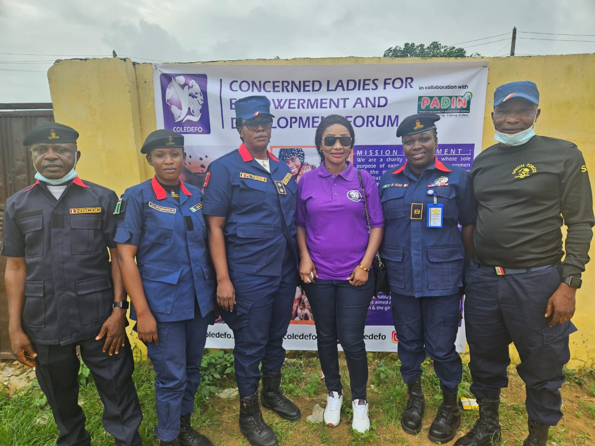
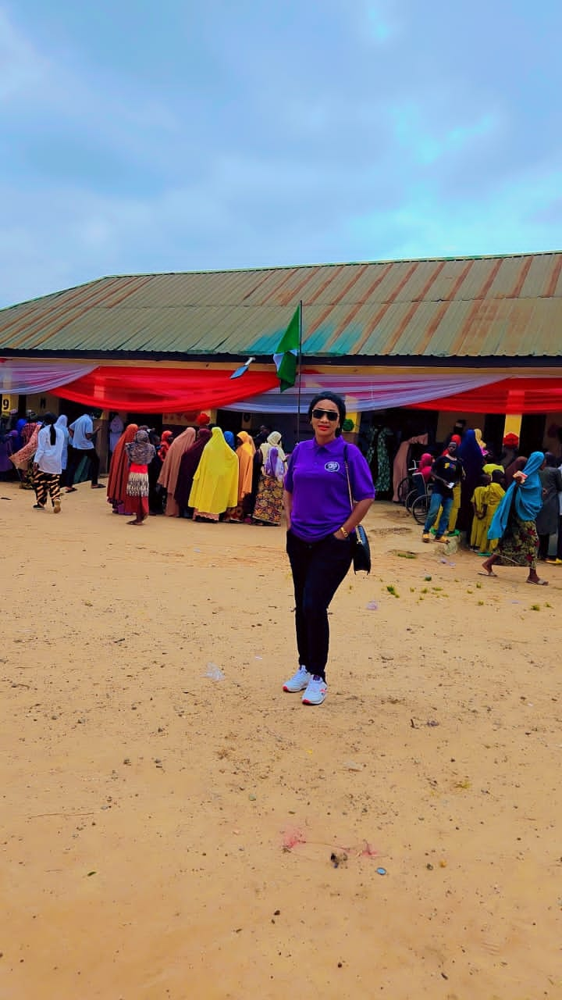
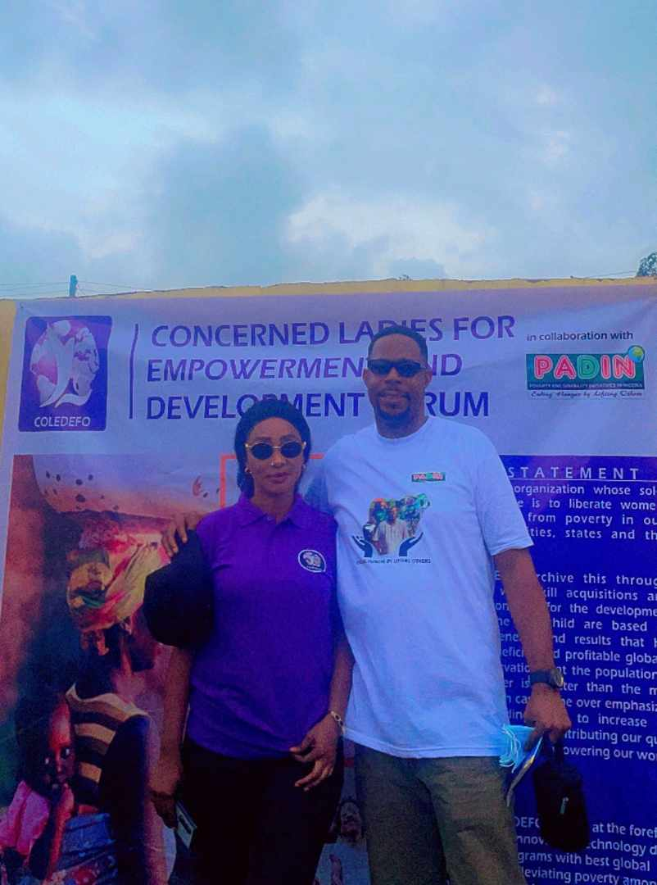
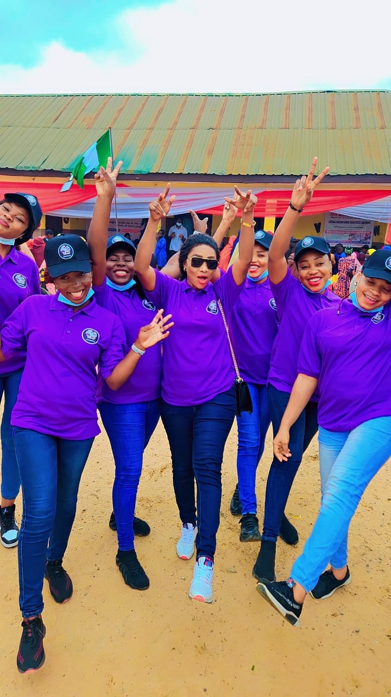
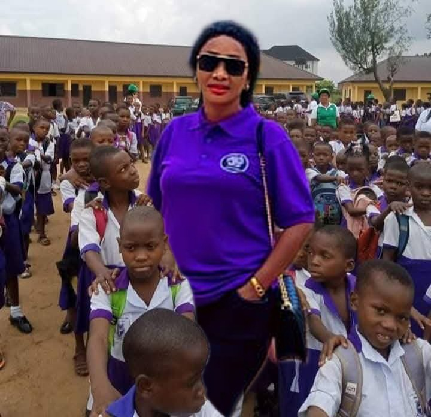

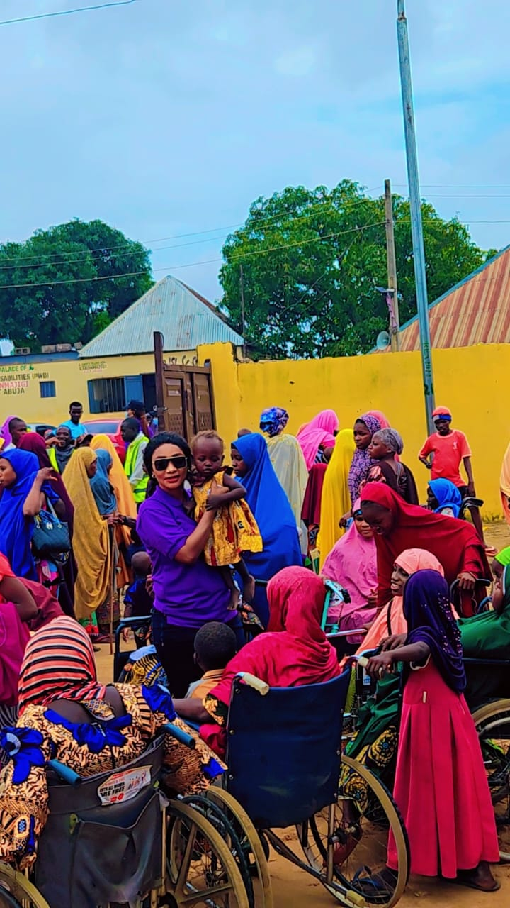
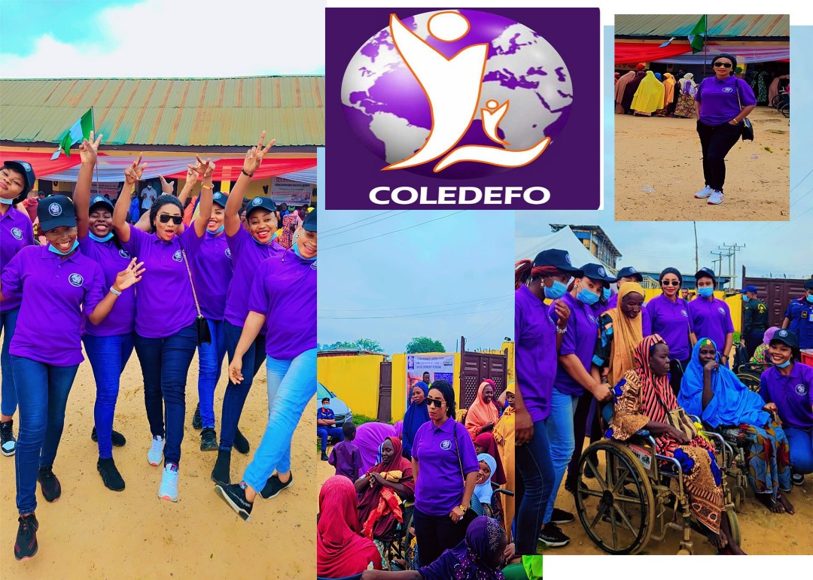

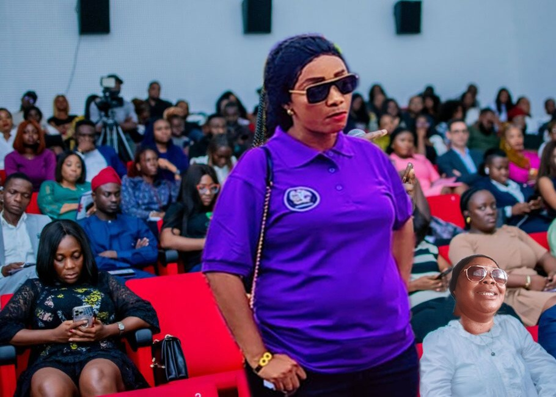
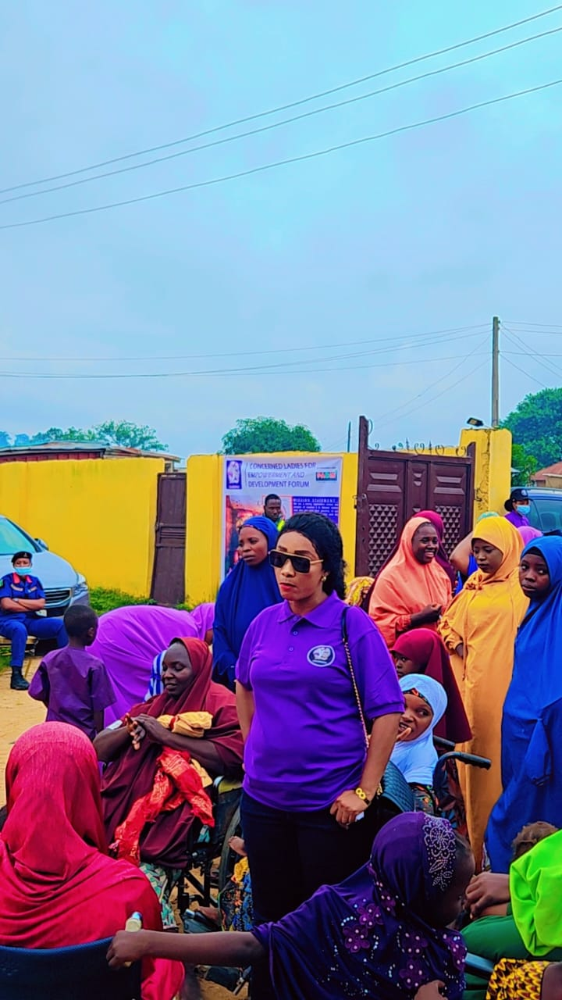

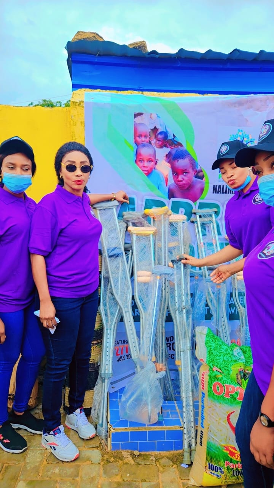
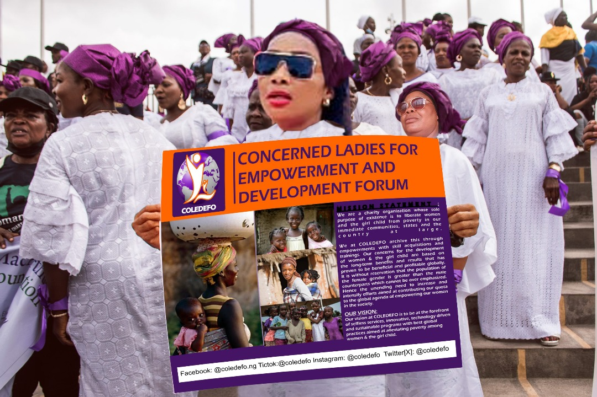
Founder
Shalom Gabriel is the visionary founder of the Concerned Ladies Empowerment and Development Forum. With a deep passion for justice and equity, she played a key role in shaping the forum's mission—to ensure that the girl child is given a fair voice in society and that women are fully represented in politics, education, and leadership. Through her dedication, the forum has championed training programs and empowerment initiatives aimed at equipping women and girls with the tools they need to thrive and lead.
Co-Founder
Princess Inyang is a devoted co founder of the Concerned Ladies Empowerment and Development Forum. Inspired by the vision to uplift women and girls, she has been instrumental in driving the mission forward. Her commitment to giving the girl child a strong foundation and equal opportunity to thrive has helped shape the forum’s advocacy and outreach efforts. With a heart for impact, she continues to support programs that empower women in all areas of life.
National Coordinator
Ezeugo Ibeneme serves as the National Coordinator of the Concerned Ladies Empowerment and Development Forum. With a strong sense of duty and compassion, he plays a vital role in organizing outreach programs, especially in rural communities. He ensures that women and girls in underserved areas have access to training, resources, and support. From coordinating logistics to delivering empowerment materials, Ezeugo is committed to seeing lives transformed through practical engagement and community-driven impact.